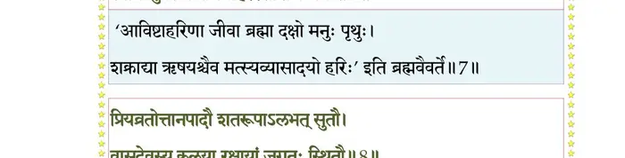
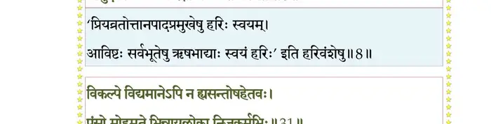
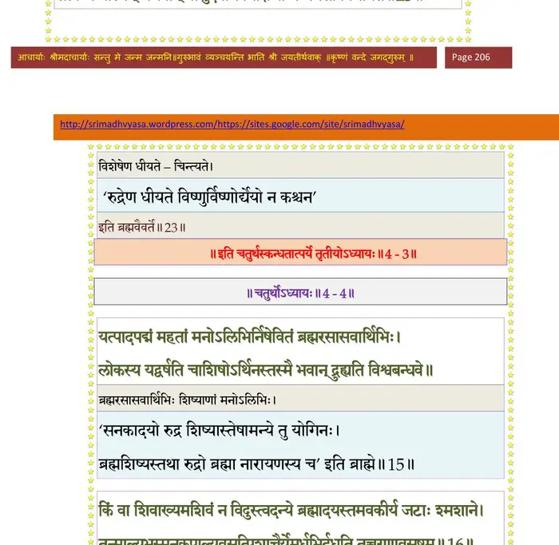
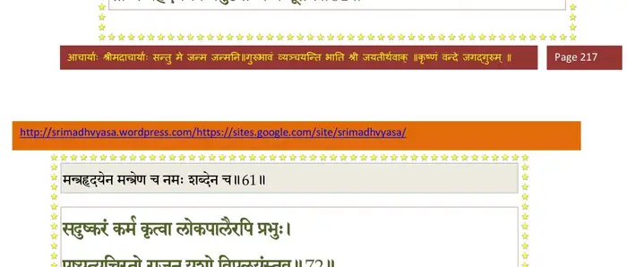
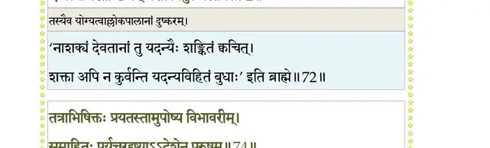
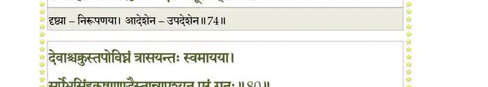
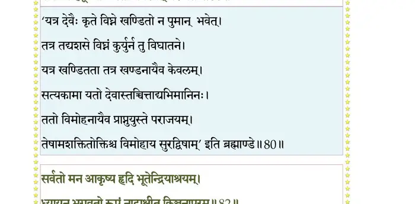
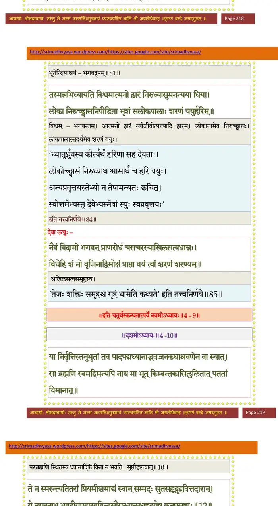

स्कन्ध 4 · अध्याय 9
श्लोक १
मैत्रेय उवाच–
सनकाद्या नारदश्च ऋभुर्हंसोऽरुणिर्यतिः ।
नैते गृहान् ब्रह्मसुता ह्यवसन्नूर्ध्वरेतसः।। १ ।।
सनकाद्या नारदश्च ऋभुर्हंसोऽरुणिर्यतिः ।
नैते गृहान् ब्रह्मसुता ह्यवसन्नूर्ध्वरेतसः।। १ ।।
श्लोक २
मृषाऽधर्मस्य भार्याऽऽसीद् दम्भं मायां च शत्रुहन् ।
असूत मिथुनं तत्तु निर्ऋतिर्जगृहेऽप्रजः।। २ ।।
असूत मिथुनं तत्तु निर्ऋतिर्जगृहेऽप्रजः।। २ ।।
श्लोक ३
तयोः समभवल्लोभो निकृतिश्च महामते ।
ताभ्यां क्रोधश्च हिंसा च दुरुक्तिश्च तयोः कलिः।। ३ ।।
ताभ्यां क्रोधश्च हिंसा च दुरुक्तिश्च तयोः कलिः।। ३ ।।
श्लोक ४
दुरुक्तौ कलिराधत्त भयं मृत्युं च सत्तम ।
तयोश्च मिथुनं जज्ञे यातना निरयस्तथा।। ४ ।।
तयोश्च मिथुनं जज्ञे यातना निरयस्तथा।। ४ ।।
श्लोक ५
एते ह्यधर्मवृक्षस्य वंशाः संसृतिहेतवः ।
श्रेयस्कामो न सेवेत नितरामाश्रमोत्तमी।। ५ ।।
श्रेयस्कामो न सेवेत नितरामाश्रमोत्तमी।। ५ ।।
श्लोक ६
सङ्ग्रहेण मया ख्यातः अनुसर्गस्तवानघ ।
त्रिः श्रुत्वैतत् पुमान् पुण्यं विधुनोत्यात्मनो मलम्।। ६ ।।
त्रिः श्रुत्वैतत् पुमान् पुण्यं विधुनोत्यात्मनो मलम्।। ६ ।।
श्लोक ७
अथातः कीर्तये वंशं पुण्यकीर्तेः कुरूद्वह ।
स्वायंभुवस्यापि मनोर्हरेरंशांशजन्मनः।। ७ ।।
स्वायंभुवस्यापि मनोर्हरेरंशांशजन्मनः।। ७ ।।
भागवततात्पर्यनिर्णय

श्लोक ८
प्रियव्रतोत्तानपादौ शतरूपापतेः सुतौ ।
वासुदेवस्य कलया रक्षायां जगतः स्थितौ।। ८ ।।
वासुदेवस्य कलया रक्षायां जगतः स्थितौ।। ८ ।।
भागवततात्पर्यनिर्णय

श्लोक ९
जाये उत्तानपादस्य सुनीतिः सुरुचिस्तयोः ।
सुरुचिः प्रेयसी पत्युर्नेतरा यत्सुतो ध्रुवः।। ९ ।।
सुरुचिः प्रेयसी पत्युर्नेतरा यत्सुतो ध्रुवः।। ९ ।।
श्लोक १०
एकदा सुरुचेः पुत्रमङ्कमारोप्य लालयन् ।
उत्तमं नारुरुक्षन्तं ध्रुवं राजाऽभ्यनन्दत।। १० ।।
उत्तमं नारुरुक्षन्तं ध्रुवं राजाऽभ्यनन्दत।। १० ।।
श्लोक ११
तथा चिकीर्षमाणं तं सपत्न्यास्तनयं ध्रुवम् ।
सुरुचिः शृृण्वतो राज्ञः सेर्ष्यमाहातिगर्विता।। ११ ।।
सुरुचिः शृृण्वतो राज्ञः सेर्ष्यमाहातिगर्विता।। ११ ।।
श्लोक १२
न वत्स नृपतेर्धिष्ण्यं भवानारोढुमर्हति ।
न गृहीतो मया यत् त्वं कुक्षावपि नृपात्मज।। १२ ।।
न गृहीतो मया यत् त्वं कुक्षावपि नृपात्मज।। १२ ।।
श्लोक १३
बालोऽसि बत नात्मानमन्यस्त्रीगर्भसंभृतम् ।
नूनं वेद भवान् यस्य दुर्लभेऽर्थे मनोरथः।। १३ ।।
नूनं वेद भवान् यस्य दुर्लभेऽर्थे मनोरथः।। १३ ।।
श्लोक १४
तपसाऽऽराध्य पुरुषं तस्यैवानुग्रहेण मे ।
गर्भे त्वं साधयात्मानं यदीच्छसि नृपासनम्।। १४ ।।
गर्भे त्वं साधयात्मानं यदीच्छसि नृपासनम्।। १४ ।।
श्लोक १६
मैत्रेय उवाच–
मातुः सपत्न्याः सुदुरुक्तिविद्धः श्वसन् रुषा दण्डहतो यथाऽहिः ।
हित्वा मिषन्तं पितरं सन्नवाचं जगाम मातुः स रुदन् सकाशम्।। १६ ।।
मातुः सपत्न्याः सुदुरुक्तिविद्धः श्वसन् रुषा दण्डहतो यथाऽहिः ।
हित्वा मिषन्तं पितरं सन्नवाचं जगाम मातुः स रुदन् सकाशम्।। १६ ।।
श्लोक १७
तं निःश्वसन्तं स्फुरिताधरोष्ठं सुनीतिरुत्सङ्गमुदूह्य बालम् ।
निशम्य तत् पुत्रमुखान्नितान्तं सा विव्यथे यद् गदितं सपत्न्या।।१६
सोत्सृज्य धैर्यं विललाप शोकदावाग्निना दावलतेव बाला ।
वाक्यं सपत्न्याः स्मरती सरोजश्रिया दृशा बाष्पकलामुवाह।। १७ ।।
निशम्य तत् पुत्रमुखान्नितान्तं सा विव्यथे यद् गदितं सपत्न्या।।१६
सोत्सृज्य धैर्यं विललाप शोकदावाग्निना दावलतेव बाला ।
वाक्यं सपत्न्याः स्मरती सरोजश्रिया दृशा बाष्पकलामुवाह।। १७ ।।
श्लोक १८
दीर्घं श्वसन्ती वृजिनस्य पारम् अपश्यती बालकमाह बाला ।
माऽमङ्गलं तात परेषु मंस्था भुङ्क्ते जनो यत् परदुःखदस्तत्।।१८।।
माऽमङ्गलं तात परेषु मंस्था भुङ्क्ते जनो यत् परदुःखदस्तत्।।१८।।
श्लोक १९
सत्यं सुरुच्याऽभिहितं भवान् मे यद् दुर्भगाया उदरे गृहीतः ।
स्तन्येन वृद्धश्च विलज्जते यां भार्येति वा वोढुमिडस्पतिर्माम्।।१९।।
स्तन्येन वृद्धश्च विलज्जते यां भार्येति वा वोढुमिडस्पतिर्माम्।।१९।।
श्लोक २०
आतिष्ठ तत् तात विमत्सरस्त्वम् उक्तं सुमात्राऽपि यदव्यलीकम् ।
आराधयाधोक्षजपादपद्मं यदीच्छसेऽध्यासनमुत्तमो यथा।। २० ।।
आराधयाधोक्षजपादपद्मं यदीच्छसेऽध्यासनमुत्तमो यथा।। २० ।।
श्लोक २२
यत्पादपद्मं परिपूज्य विश्वविभावनायात्तगुणाभिपत्तेः ।
अजोऽध्यतिष्ठत् खलु पारमेष्ठ्यं पदं जितात्मा श्वसनाभिवन्द्यम्।।२१
तथा मनुर्वो भगवान् पितामहो यमेकभक्त्या पुरुदक्षिणैर्मखैः ।
इष्ट्वाऽभिपेदे दुरवापमन्यतो भौमं सुखं दिव्यमथापवर्ग्यम्।। २२ ।।
अजोऽध्यतिष्ठत् खलु पारमेष्ठ्यं पदं जितात्मा श्वसनाभिवन्द्यम्।।२१
तथा मनुर्वो भगवान् पितामहो यमेकभक्त्या पुरुदक्षिणैर्मखैः ।
इष्ट्वाऽभिपेदे दुरवापमन्यतो भौमं सुखं दिव्यमथापवर्ग्यम्।। २२ ।।
श्लोक २३
तमेव वत्साश्रय भृत्यवत्सलं मुमुक्षुभिर्मृग्यपदाब्जपद्धतिम् ।
अनन्यभावे निजधर्मभाविते मनस्यवस्थाप्य भजस्व पूरुषम्।।२३।।
अनन्यभावे निजधर्मभाविते मनस्यवस्थाप्य भजस्व पूरुषम्।।२३।।
श्लोक २४
नान्यं ततः पद्मपलाशलोचनाद् दुःखच्छिदं ते मृगयामि कञ्चन ।
यो मृग्यते हस्तगृहीतपद्मया श्रियेतरैरङ्ग विमृग्यमाणया।। २४ ।।
यो मृग्यते हस्तगृहीतपद्मया श्रियेतरैरङ्ग विमृग्यमाणया।। २४ ।।
श्लोक २५
मैत्रेय उवाच–
एवं सञ्जल्पितं मातुराकर्ण्यार्थागमं वचः ।
सन्नियम्यात्मनाऽऽत्मानं निश्चक्राम पितुः पुरात्।। २५ ।।
एवं सञ्जल्पितं मातुराकर्ण्यार्थागमं वचः ।
सन्नियम्यात्मनाऽऽत्मानं निश्चक्राम पितुः पुरात्।। २५ ।।
श्लोक २६
नारदस्तदुपाकर्ण्य ज्ञात्वा चास्य चिकीर्षितम् ।
स्पृष्ट्वा मूर्धन्यघघ्नेन पाणिना प्राह विस्मितः।। २६ ।।
स्पृष्ट्वा मूर्धन्यघघ्नेन पाणिना प्राह विस्मितः।। २६ ।।
श्लोक २७
अहो तेजः क्षत्रियाणां मानभङ्गममृष्यताम् ।
बालोऽप्ययं हृदा धत्ते यत् समातुरसद्वचः।। २७ ।।
बालोऽप्ययं हृदा धत्ते यत् समातुरसद्वचः।। २७ ।।
श्लोक २८
नारद उवाच–
क्व यात्येको भवान् वत्स हित्वा स्वगृहमृद्धिमत् ।
लक्षये त्वाऽवमत्याऽङ्ग संतप्तं स्वजनोत्थया।। २८ ।।
क्व यात्येको भवान् वत्स हित्वा स्वगृहमृद्धिमत् ।
लक्षये त्वाऽवमत्याऽङ्ग संतप्तं स्वजनोत्थया।। २८ ।।
श्लोक २९
ध्रुव उवाच–
किं न ते ध्यानजातेन दृष्टं वा योगराधसा ।
नोत्सहे सुरुचेर्वाचा समाधातुं मनःक्षतम्।। २९ ।।
किं न ते ध्यानजातेन दृष्टं वा योगराधसा ।
नोत्सहे सुरुचेर्वाचा समाधातुं मनःक्षतम्।। २९ ।।
श्लोक ३०
नारद उवाच–
नाधुनाऽप्यवमानं ते सन्मानं चापि पुत्रक ।
लक्षयामः कुमारस्य सक्तस्य क्रीडनादिषु।। ३० ।।
नाधुनाऽप्यवमानं ते सन्मानं चापि पुत्रक ।
लक्षयामः कुमारस्य सक्तस्य क्रीडनादिषु।। ३० ।।
श्लोक ३१
विकल्पे विद्यमानेऽपि न ह्यसन्तोषहेतवः ।
पुंसो मोहमृते भिन्ना यल्लोका निजकर्मभिः।। ३१ ।।
पुंसो मोहमृते भिन्ना यल्लोका निजकर्मभिः।। ३१ ।।
भागवततात्पर्यनिर्णय
श्लोक ३२
परितुष्येत् ततस्तात तावन्मात्रेण पूरुषः ।
दैवोपसादितं यावद् वीक्ष्येश्वरगतिं बुधः।। ३२ ।।
दैवोपसादितं यावद् वीक्ष्येश्वरगतिं बुधः।। ३२ ।।
श्लोक ३३
अथ मात्रोपदिष्टेन योगेनावरुरुत्ससि ।
यत्प्रसादात् स वै पुंसां दुराराध्यो गतो मम।। ३३ ।।
यत्प्रसादात् स वै पुंसां दुराराध्यो गतो मम।। ३३ ।।
श्लोक ३४
मुनयः पदवीं यस्य निःसङ्गेनोरुजन्मभिः ।
न विदुर्मृगयन्तोऽपि तीव्रयोगसमाधिना।। ३४ ।।
न विदुर्मृगयन्तोऽपि तीव्रयोगसमाधिना।। ३४ ।।
श्लोक ३५
अतो निवर्ततामेष निर्बन्धस्तव निष्फलः ।
यतिष्यति भवान् काले श्रेयसे समुपस्थिते।। ३५ ।।
यतिष्यति भवान् काले श्रेयसे समुपस्थिते।। ३५ ।।
श्लोक ३६
यस्य दैवेन विहितं स तेन सुखदुःखयोः ।
आत्मानं तोषयन् देही तमसः पारमृच्छति।। ३६ ।।
आत्मानं तोषयन् देही तमसः पारमृच्छति।। ३६ ।।
श्लोक ३७
गुणाधिकान्मुदं लिप्सेदनुक्रोशं गुणाधमात् ।
मैत्रीं समानादन्विच्छेन्न तापैरभिभूयते।। ३७ ।।
मैत्रीं समानादन्विच्छेन्न तापैरभिभूयते।। ३७ ।।
श्लोक ३८
ध्रुव उवाच–
सोऽयं शमो भगवता सुखदुःखहतात्मनाम् ।
दर्शितः कृपया पुंसां दुर्दर्शोऽस्मद्विधैस्तु यः।। ३८ ।।
सोऽयं शमो भगवता सुखदुःखहतात्मनाम् ।
दर्शितः कृपया पुंसां दुर्दर्शोऽस्मद्विधैस्तु यः।। ३८ ।।
श्लोक ३९
अथाऽपि मेऽविनीतस्य क्षात्रं घोरमुपेयुषः ।
सुरुच्या दुर्वचोबाणैर्न भिन्ने श्रयते हृदि।। ३९ ।।
सुरुच्या दुर्वचोबाणैर्न भिन्ने श्रयते हृदि।। ३९ ।।
श्लोक ४०
पदं त्रिभुवनोत्कृष्टं जिगीषोः साधुवर्त्म मे ।
ब्रूह्यस्मत्पितृभिर्ब्रह्यन्नन्यैरप्यनधिष्ठितम्।। ४० ।।
ब्रूह्यस्मत्पितृभिर्ब्रह्यन्नन्यैरप्यनधिष्ठितम्।। ४० ।।
श्लोक ४१
नूनं भवान् भगवतो योऽङ्गजः परमेष्ठिनः ।
विनुदन्नटते वीणां हितार्थं जगतोऽर्कवत्।। ४१ ।।
विनुदन्नटते वीणां हितार्थं जगतोऽर्कवत्।। ४१ ।।
श्लोक ४२
मैत्रेय उवाच–
इत्युदाहृतमाकर्ण्य भगवान् नारदस्तदा ।
प्रीतः प्रत्याह तं बालं तद्वाक्यमनुकम्पया।। ४२ ।।
इत्युदाहृतमाकर्ण्य भगवान् नारदस्तदा ।
प्रीतः प्रत्याह तं बालं तद्वाक्यमनुकम्पया।। ४२ ।।
श्लोक ४३
नारद उवाच–
जनन्याऽभिहितः पन्थाः स वै निःश्रैयसस्य ते ।
भगवान् वासुदेवस्तं भज तत्प्रवणात्मना।। ४३ ।।
जनन्याऽभिहितः पन्थाः स वै निःश्रैयसस्य ते ।
भगवान् वासुदेवस्तं भज तत्प्रवणात्मना।। ४३ ।।
भागवततात्पर्यनिर्णय

श्लोक ४४
धर्मार्थकाममोक्षाख्यं य इच्छेच्छ्रेय आत्मनः ।
एकमेव हरेस्तत्र कारणं पादसेवनम्।। ४४ ।।
एकमेव हरेस्तत्र कारणं पादसेवनम्।। ४४ ।।
श्लोक ४५
तत् तात गच्छ भद्रं ते यमुनायास्तटं शुचि ।
पुण्यं मधुवनं यत्र सान्निध्यं नित्यदा हरेः।। ४५ ।।
पुण्यं मधुवनं यत्र सान्निध्यं नित्यदा हरेः।। ४५ ।।
श्लोक ४६
स्नात्वाऽनुसवनं तस्मिन् कालिन्द्या सलिले शिवे ।
कृत्वोचितानि निवसन्नात्मनः कल्पितासने।। ४६ ।।
कृत्वोचितानि निवसन्नात्मनः कल्पितासने।। ४६ ।।
श्लोक ४७
प्राणायामेन त्रिवृता प्राणेन्द्रियमनोमलम् ।
शनैर्व्युदस्याभिध्यायेन्मनसा गुरुणां गुरुम्।। ४७ ।।
शनैर्व्युदस्याभिध्यायेन्मनसा गुरुणां गुरुम्।। ४७ ।।
श्लोक ४८
प्रसादाभिमुखं शश्वत्प्रसन्नवदनेक्षणम् ।
सुनासं सुभ्रुवं चारुकपोलं सुन्दरं हरिम्।। ४८ ।।
सुनासं सुभ्रुवं चारुकपोलं सुन्दरं हरिम्।। ४८ ।।
श्लोक ४९
तरुणं रमणीयाङ्गमरुणाब्जेक्षणाधरम् ।
प्रयताश्रयणं कृष्णं शरण्यं करुणार्णवम्।। ४९ ।।
प्रयताश्रयणं कृष्णं शरण्यं करुणार्णवम्।। ४९ ।।
श्लोक ५०
श्रीवत्साङ्कं घनश्यामं पुरुषं वनमालिनम् ।
शङ्खचक्रगदापद्मैरभिव्यक्तचतुर्भुजम्।। ५० ।।
शङ्खचक्रगदापद्मैरभिव्यक्तचतुर्भुजम्।। ५० ।।
श्लोक ५१
किरीटिनं कुण्डलिनं केयूरवलयान्वितम् ।
कौस्तुभाभरणग्रीवं पीतकौशेयवाससम्।। ५१ ।।
कौस्तुभाभरणग्रीवं पीतकौशेयवाससम्।। ५१ ।।
श्लोक ५२
काञ्चीकलापपर्यस्तं लसत्काञ्चननूपुरम् ।
दर्शनीयतमं शान्तं मनोनयनवर्धनम्।। ५२ ।।
दर्शनीयतमं शान्तं मनोनयनवर्धनम्।। ५२ ।।
श्लोक ५३
पद्भ्यां नखमणिश्रेण्या विलसद्भ्यां समर्चताम् ।
हृत्पद्मकर्णिकाधिष्ण्यमाक्रम्यात्मन्यवस्थितम्।। ५३ ।।
हृत्पद्मकर्णिकाधिष्ण्यमाक्रम्यात्मन्यवस्थितम्।। ५३ ।।
श्लोक ५४
स्मयमानमभिध्यायेत् सानुरागावलोकनम् ।
नियमेनैकभूतेन मनसा वरदर्षभम्।। ५४ ।।
नियमेनैकभूतेन मनसा वरदर्षभम्।। ५४ ।।
भागवततात्पर्यनिर्णय
श्लोक ५५
एवं भगवतो रूपं सुभद्रं ध्यायतो मनः ।
निर्वृत्त्या परया पूर्णं सम्पन्नं न निवर्तते।। ५५ ।।
निर्वृत्त्या परया पूर्णं सम्पन्नं न निवर्तते।। ५५ ।।
श्लोक ५६
जाप्यश्च परमो गुह्यः श्रूयतां मे नृपात्मज ।
यं सप्तरात्रं प्रपठन् पुमान् पश्यति खेचरान्।। ५६ ।।
यं सप्तरात्रं प्रपठन् पुमान् पश्यति खेचरान्।। ५६ ।।
श्लोक ५७
ओं नमो भगवते वासुदेवाय
मन्त्रेणानेन देवस्य कुर्याद् द्रव्यमयीं बुधः ।
सपर्यां विविधैर्द्रव्यैर्देशकालविभागवित्।। ५७ ।।
मन्त्रेणानेन देवस्य कुर्याद् द्रव्यमयीं बुधः ।
सपर्यां विविधैर्द्रव्यैर्देशकालविभागवित्।। ५७ ।।
श्लोक ५८
सलिलैः शुचिभिर्माल्यैर्वन्यैर्मूलफलादिभिः ।
शस्ताङ्कुरैः कुशैश्चार्चेत् तुलस्या प्रियया प्रभुम्।। ५८ ।।
शस्ताङ्कुरैः कुशैश्चार्चेत् तुलस्या प्रियया प्रभुम्।। ५८ ।।
श्लोक ५९
लब्ध्वा द्रव्यमयीमर्चां क्षित्यम्ब्वादिषु चार्चयेत् ।
आहृतात्मा मुनिः शान्तो यतवाङ् मितवन्यभुक्।। ५९ ।।
आहृतात्मा मुनिः शान्तो यतवाङ् मितवन्यभुक्।। ५९ ।।
श्लोक ६०
स्वेच्छावतारचरितैश्चरितं निजमायया ।
करिष्यत्युत्तमश्लोकस्तान् ध्यायेद् हृदयङ्गमान्।। ६० ।।
करिष्यत्युत्तमश्लोकस्तान् ध्यायेद् हृदयङ्गमान्।। ६० ।।
श्लोक ६१
परिचर्या भगवतो यावतीः पूर्वकल्पिताः ।
ता मन्त्रहृदयेनैव प्रयुज्यान्मन्त्रमूर्तये।। ६१ ।।
ता मन्त्रहृदयेनैव प्रयुज्यान्मन्त्रमूर्तये।। ६१ ।।
भागवततात्पर्यनिर्णय

श्लोक ६२
एवं कायेन मनसा वचसा च मनोगतः ।
परिचर्यमाणो भगवान् भक्तिमत्परिचर्यया।। ६२ ।।
परिचर्यमाणो भगवान् भक्तिमत्परिचर्यया।। ६२ ।।
श्लोक ६३
पुंसाममायिनां सम्यग् भजतां भाववर्धनः ।
श्रेयो दिशत्यभिमतं यद् धर्मादिषु देहिनाम्।। ६३ ।।
श्रेयो दिशत्यभिमतं यद् धर्मादिषु देहिनाम्।। ६३ ।।
श्लोक ६४
विरक्तश्चेन्द्रियरतौ भक्तियोगेन भूयसा ।
तन्निरन्तरभावेन भजेताद्धा विमुक्तये।। ६४ ।।
तन्निरन्तरभावेन भजेताद्धा विमुक्तये।। ६४ ।।
श्लोक ६५
मैत्रेय उवाच–
इत्युक्तस्तं परिक्रम्य प्रणम्य च नृपार्भकः ।
ययौ मधुवनं पुण्यं हरेश्चरणचर्चितम्।। ६५ ।।
इत्युक्तस्तं परिक्रम्य प्रणम्य च नृपार्भकः ।
ययौ मधुवनं पुण्यं हरेश्चरणचर्चितम्।। ६५ ।।
श्लोक ६६
तपोवनं गते तस्मिन् प्रविष्टोऽन्तःपुरं मुनिः ।
अर्हितोऽर्हणया राज्ञा सुखासीन उवाच तम्।। ६६ ।।
अर्हितोऽर्हणया राज्ञा सुखासीन उवाच तम्।। ६६ ।।
श्लोक ६७
नारद उवाच–
राजन् किं ध्यायसे दीर्घं मुखेन परिशुष्यता ।
किं वा न रिष्यते कामो धर्मो वाऽर्थेन संयुतः।। ६७ ।।
राजन् किं ध्यायसे दीर्घं मुखेन परिशुष्यता ।
किं वा न रिष्यते कामो धर्मो वाऽर्थेन संयुतः।। ६७ ।।
श्लोक ६८
राजोवाच–
सुतो मे बालको ब्रह्मन् स्त्रैणेनाकरुणात्मना ।
निर्वासितः पञ्चवर्षः सह मात्रा महान् कविः।। ६८ ।।
सुतो मे बालको ब्रह्मन् स्त्रैणेनाकरुणात्मना ।
निर्वासितः पञ्चवर्षः सह मात्रा महान् कविः।। ६८ ।।
श्लोक ६९
अप्यनाथं वने ब्रह्मन् मा खादन्त्वर्भकं वृकाः ।
श्रान्तं शयानं क्षुधितं परिम्लानमुखाम्बुजम्।। ६९ ।।
श्रान्तं शयानं क्षुधितं परिम्लानमुखाम्बुजम्।। ६९ ।।
श्लोक ७०
अहो मे बत दौरात्म्यं स्त्रीजितस्योपधारय ।
योऽङ्कं प्रेम्णाऽऽरुरुक्षन्तं नाभ्यनन्दमसत्तमः।। ७० ।।
योऽङ्कं प्रेम्णाऽऽरुरुक्षन्तं नाभ्यनन्दमसत्तमः।। ७० ।।
श्लोक ७१
नारद उवाच–
मा मा शुचः स्वतनयं देवगुप्तं विशांपते ।
तत्प्रभावमविज्ञाय प्रावृङ्क्ते यद्यशो जगत्।। ७१ ।।
मा मा शुचः स्वतनयं देवगुप्तं विशांपते ।
तत्प्रभावमविज्ञाय प्रावृङ्क्ते यद्यशो जगत्।। ७१ ।।
श्लोक ७२
सुदुष्करं कर्म कृत्वा लोकपालैरपि प्रभुः ।
एष एष्यत्यचिरतो यशो विपुलयंस्तव।। ७२ ।।
एष एष्यत्यचिरतो यशो विपुलयंस्तव।। ७२ ।।
भागवततात्पर्यनिर्णय

श्लोक ७३
मैत्रेय उवाच–
इति देवर्षिणा प्रोक्तं विस्रभ्य जगतीपतिः ।
राज्यलक्ष्मीमनादृत्य पुत्रमेवान्वचिन्तयत्।। ७३ ।।
इति देवर्षिणा प्रोक्तं विस्रभ्य जगतीपतिः ।
राज्यलक्ष्मीमनादृत्य पुत्रमेवान्वचिन्तयत्।। ७३ ।।
श्लोक ७४
तत्राभिषिक्तः प्रयतस्तामुपोष्य विभावरीम् ।
समाहितः पर्यचरद् दिष्ट्याऽऽदेशेन पूरुषम्।। ७४ ।।
समाहितः पर्यचरद् दिष्ट्याऽऽदेशेन पूरुषम्।। ७४ ।।
भागवततात्पर्यनिर्णय

श्लोक ७५
त्रिरात्रान्ते त्रिरात्रान्ते कपित्थबदराशनः ।
आत्मवृत्त्यनुसारेण मासं निन्येऽर्चयन् हरिम्।। ७५ ।।
आत्मवृत्त्यनुसारेण मासं निन्येऽर्चयन् हरिम्।। ७५ ।।
श्लोक ७६
द्वितीयं च तथा मासं षष्ठे षष्ठेऽर्भको दिने ।
तृणपर्णादिभिः शीर्णैः कृतान्नोऽभ्यर्चयद् विभुम्।। ७६ ।।
तृणपर्णादिभिः शीर्णैः कृतान्नोऽभ्यर्चयद् विभुम्।। ७६ ।।
श्लोक ७७
तृतीयं चानयन्मासं नवमे नवमेऽहनि ।
अब्भक्ष उत्तमश्लोकमुपाधावत् समाधिना।। ७७ ।।
अब्भक्ष उत्तमश्लोकमुपाधावत् समाधिना।। ७७ ।।
श्लोक ७८
चतुर्थमपि वै मासं द्वादशे द्वादशेऽहनि ।
वायुभक्षो जितश्वासो ध्यायन् देवमपारयत्।। ७८ ।।
वायुभक्षो जितश्वासो ध्यायन् देवमपारयत्।। ७८ ।।
श्लोक ७९
पञ्चमे मास्यनुप्राप्ते जितश्वासो नृपात्मजः ।
ध्यायन् ब्रह्म पदैकेन तस्थौ स्थाणुरिवाचलः।। ७९ ।।
ध्यायन् ब्रह्म पदैकेन तस्थौ स्थाणुरिवाचलः।। ७९ ।।
श्लोक ८०
देवाश्चक्रुस्तपोविघ्नं त्रासयन्तः स्वमायया ।
सर्पेभसिंहकूष्माण्डैस्तान् नापश्यत् परं गतः।। ८० ।।
सर्पेभसिंहकूष्माण्डैस्तान् नापश्यत् परं गतः।। ८० ।।
भागवततात्पर्यनिर्णय

श्लोक ८१
सर्वतो मन आकृष्य हृदि भूतेन्द्रियाश्रयम् ।
ध्यायन् भगवतो रूपं नाद्राक्षीत् किञ्चनापरम्।। ८१ ।।
ध्यायन् भगवतो रूपं नाद्राक्षीत् किञ्चनापरम्।। ८१ ।।
भागवततात्पर्यनिर्णय

श्लोक ८२
आधारं महदादीनां प्रधानपुरुषेश्वरम् ।
ब्रह्म धारयमाणे तु त्रयो लोकाश्चकम्पिरे।। ८२ ।।
ब्रह्म धारयमाणे तु त्रयो लोकाश्चकम्पिरे।। ८२ ।।
श्लोक ८३
यदैकपादेन स पार्थिवार्भकस्तस्थौ तदङ्गुष्ठनिपीडिता मही ।
ननाम तत्रार्धमिभेन्द्रधिष्ठिता तरीव सव्येतरतः पदे पदे।। ८३ ।।
ननाम तत्रार्धमिभेन्द्रधिष्ठिता तरीव सव्येतरतः पदे पदे।। ८३ ।।
श्लोक ८४
तस्मिन्नभिध्यायति विश्वमात्मनो द्वारं निरुध्यासुमनन्यया धिया ।
लोका निरुच्छ्वासनिपीडिता भृशं सलोकपालाः शरणं ययुर्हरिम् ।। ८४ ।।
लोका निरुच्छ्वासनिपीडिता भृशं सलोकपालाः शरणं ययुर्हरिम् ।। ८४ ।।
श्लोक ८५
देवा ऊचुः–
नैवं विदामो भगवन् प्राणरोधं चराचरस्याखिलसत्वधाम्नः ।
विधेहि तन्नो वृजिनाद् विमोक्षं प्राप्ता वयं त्वां शरणं शरण्यम्।। ८५ ।।
नैवं विदामो भगवन् प्राणरोधं चराचरस्याखिलसत्वधाम्नः ।
विधेहि तन्नो वृजिनाद् विमोक्षं प्राप्ता वयं त्वां शरणं शरण्यम्।। ८५ ।।
श्लोक ८६
श्रीभगवानुवाच–
मा भैष्ट बालं तपसो दुरत्ययान्निवर्तयिष्ये प्रतियात स्वधाम ।
यतो हि वः प्राणनिरोध आसीदौत्तानपादिर्मयि सङ्गतात्मा।। ८६ ।।
मा भैष्ट बालं तपसो दुरत्ययान्निवर्तयिष्ये प्रतियात स्वधाम ।
यतो हि वः प्राणनिरोध आसीदौत्तानपादिर्मयि सङ्गतात्मा।। ८६ ।।
।। इति श्रीमद्भागवते चतुर्थस्कन्धे नवमोऽध्यायः ।।